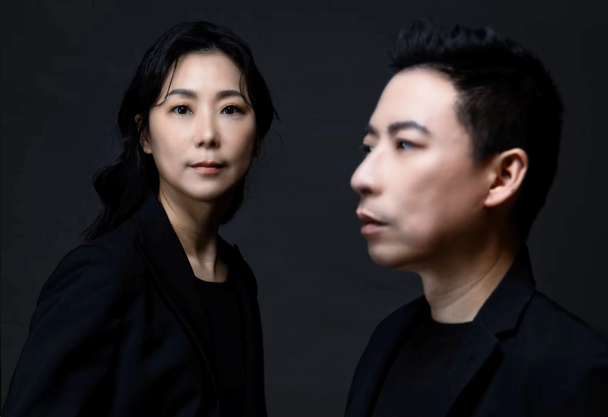

建築團隊
ARCHITECTURE TEAM

建築設計 ARCHITECTURE DESIGN
吳六合建築師事務所
吳六合建築師具備深厚實務經驗，領導「吳六合建築師事務所」深耕台灣多年。設計核心強調建築與環境的諧調共生，擅長平衡空間美學、機能需求與專業法規。憑藉嚴謹執行力與豐富的住宅、商辦實績，致力為客戶創造具備永續價值與人文溫度的建築空間。

景觀與室內設計 LANDSCAPE & INTERIOR
玖柞設計
朱伯晟主持建築師
×
蔡雅怡執行長
以光與風描繪生活
2004年，我們懷抱對室內設計的憧憬，創立了玖柞設計。
在每一次創作中，讓環境的光與風得以自然流轉——
有光，便能映出影；有風，氣流得以移動。
於是，空間成了一部關於生活的紀錄片。